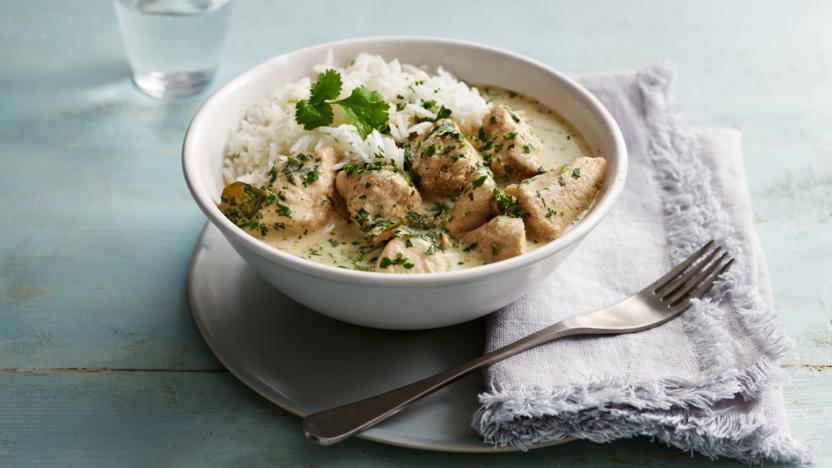

Thai green curry

Straightforward recipe for a classic Thai green curry
Ingredients
- 1 tbsp vegetable oil
- 2 tbsp Thai green curry paste
- 1 tbsp brown sugar
- 1–2 thick stalks lemongrass,
- 750g skinless, boneless chicken chicken breast,
- 6–8 kaffir lime leaves
- 400ml tin coconut milk
- Thai fish sauce
- handful of coriander
- ½–1 lime, juice only
- Heat the oil in a wok or large frying pan. Add the green curry paste and sugar and cook over a fairly high heat for about a minute, stirring with the lemongrass, if using.
- Reduce the heat slightly and stir in the chicken pieces and lime leaves or zest until coated in the paste.
- Add the coconut milk, fish sauce or soy sauce and bring to a simmer, cooking for 25–30 minutes until thickened slightly.
- Stir in the coriander and lime juice. Check for seasoning, adding more fish sauce or soy sauce if needed.
- The curry is now best left to sit for a few minutes so the sauce becomes creamier.
- Serve with lots of fragrant Thai jasmine rice.